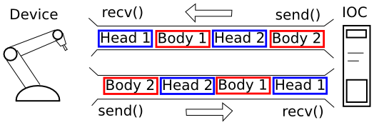

The PSC transport protocol uses TCP to transport a bi-direction stream of messages between a device and an IOC. Each message consists of a fixed length 8 byte header followed by a variable length body.
The header has 3 fields: framing marker (2 bytes), message ID (2 bytes), and body length (4 bytes). The framing marker is ASCII charactors ‘P’ and ‘S’. The other two are unsigned integers in big endian byte order.
0 1 2 3
+-----+-----+-----------+
0 | P | S | Msg ID |
+-----+-----+-----------+
4 | Body Length |
+-----------------------+
8 | Body bytes ... |
An equivalent C structure definition for a message header would be:
struct pscHeader {
char P; /* must be 'P' */
char S; /* must be 'S' */
uint16_t msgid;
uint32_t bodylen; /* in bytes */
};
assert(sizeof(struct pscdrvHeader)==8);
The Single Register Write Device Supports understand a sub-header containing a 32-bit unsigned integer address and 0 or more bytes of value. Thus the minimum body length allowed is 4 bytes.
This is included to support the common case of writing individually addressable registers without exhausting the available message IDs.
0 1 2 3
+-----+-----+-----------+
0 | P | S | Msg ID |
+-----+-----+-----+-----+
4 | Body Length |
+-----+-----+-----+-----+
8 | Address |
+-----+-----+-----------+
C | Value |
+-----------------------+
F | Value ... |
In the PSC driver, the message ID is used to determine how the message body is interpreted. For example message ID 1 might be used by a device to send/recv a fixed length array of register values, while ID 20 is used to send a variable length array of ADC values.
It is not necessary for a given message ID to have the same meaning when received by the Device, as when received by the IOC. However, this is recommended to preserve engineer sanity.
By design this protocol does not require that messages are acknowledged, or replied to, but the recipient. The TCP transport protocol already provides some guarantees of message delivery. It is intended that send/receive synchronization can be achieved by, for example, ensuring that when a device register is changed, that a message with the updated value will be sent to the IOC (or IOCs) automatically.
Explicit request/response can to some extent be implemented with Records.